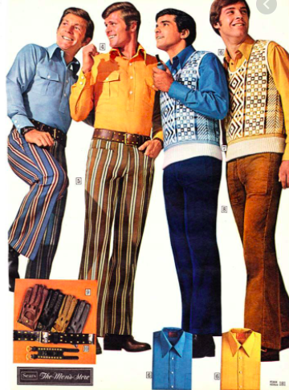
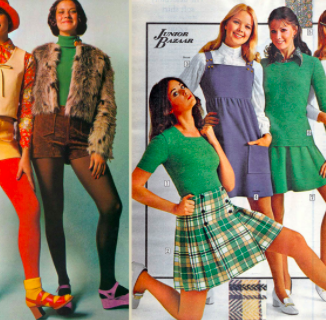

Outfits from the 1970's

1970's Mens Fashion is all about the bell-bottom and wide leg pants. Men in the 1970's also were known for wearing platoform shoes, vests and even sweater vests. With the sweater vests, tight shirts and tutle necks were mostly worn under. But one of the stylish trends in the 1970's were leisure suits.

Womens Fashion in the 1970's was all about the bright colors and accessories. One of the most poopular styles for girls were the midi skirts and maxi dresses. But for a more fun look, tie dye and accessories like headbands, chokers and feathers. When girls dressed more formal, they would go for blouses and similar to the guys, they'd wear bellbottoms, too.